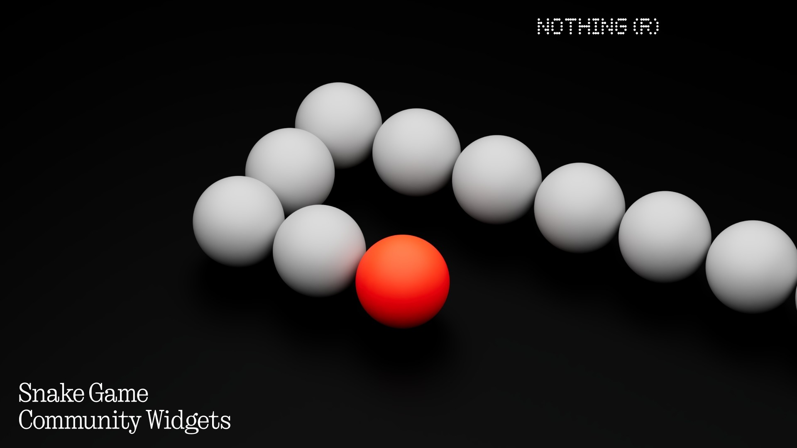

Snake Widget for NothingOS

Back in January 2024, I was playing around with a fun design exploration project. Just imagining what playful, useful widgets could look like on Nothing OS. One of the ideas I came up with was a tiny home screen version of the classic Snake game.
https://www.instagram.com/reel/DDKaf3_IdB-/?utm_source=ig_web_copy_link
Nothing (Nothing.tech) runs a custom Android skin called Nothing OS, and their whole vibe is clean, minimal, and a little nostalgic. A few months after I shared my widget ideas, the Nothing Team reached out to me and said they were interested in bringing them to life. We agreed to start with Snake.
We finalized the design in September 2024, and development kicked off soon after with community developer Thomas Legendre. We kept the retro-pixel charm while making it fit beautifully into the Nothing aesthetic.
By December, the Snake widget launched inside the Nothing Community Widgets app. and it blew up. It’s already crossed 100,000 downloads, and seeing it live on people’s home screens is honestly surreal.
This was one of my first times collaborating directly with a tech company on a public release, and I’m proud to have contributed both the concept and the visual design.
Know more: